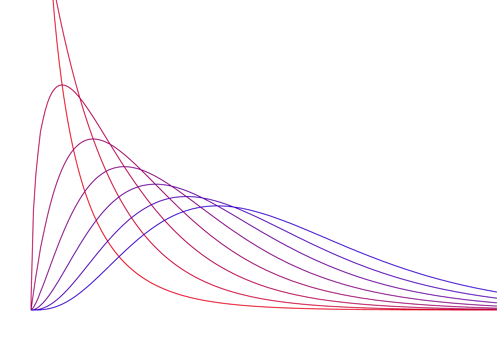

Some of you have struggled to produce boxplots of variables like price and odometer because they have ridiculous outliers. One way to overcome this that we’ve explored is to remove the extreme observations. A possibly better way, though, is illustrated below. Saying outlier.shape=NA in the geom_boxplot() function removes outliers before the dimensions of the plot are calculated. The result is a much more readable boxplot containing most of the cars.
Note that, in the above example, I’ve stored df in vehicles.Rdata using the save() function. Before saving it I converted condition to a factor and both price and odometer to numeric.
7.1.2 Preparing data
Note that you can use the above quantile trick in other ways. For example, here I’m filtering out the extreme values of price, without necessarily knowing what they are.
# A tibble: 51 × 2
state n
<chr> <int>
1 ca 39707
2 fl 23260
3 tx 18285
4 ny 15956
5 oh 15086
6 mi 14959
7 pa 11787
8 nc 11105
9 or 10875
10 wi 10194
11 tn 9466
12 co 9335
# ℹ 39 more rows
One group tabled price by paint color. This is not a good idea! There are too many individual prices. Instead, you can try using ranges with one of the cut_ functions, cut_interval (shown here), or cut_width. Then you can make tables or save the ranges to use in barcharts or other tables.
The only obvious numeric variables are price, odometer, and year. Look at how bunched up the odometer values are in the first plot. You can transform them by taking the log() function on them so that the lower values take up more space. By the way, there are only two thirds as many chevys as fords in the Tiny data.
Notice that you can choose any hex value for colors manually. You can check the hex value for any color you can name with google or by sites like https://www.colorhexa.com/.
The above table is obviously too wide for a report. I suggest you make something like it while you’re working, then use it to figure out which columns to include, then do something like the following. Note that the expression #| output: asis must be the first line of the following chunk and it is not displayed in the html file. You must look at the qmd file to see it.
7.2 Textbook section 6.1 Inference for a single proportion
7.2.1 Is the sample proportion nearly normal?
Note: The book uses \(p\) in two ways: as a \(p\)-value in a hypothesis test, and as \(p\), a population proportion. Related to the population proportion is the sample proportion, \(\hat{p}\), pronounced p-hat. Too many \(p\)s!
The sampling distribution for \(\hat{p}\) based on a sample of size \(n\) from a population with a true proportion \(p\) is nearly normal when:
The sample’s observations are independent, e.g., are from a simple random sample.
We expected to see at least 10 successes and 10 failures in the sample, i.e., \(np \geqslant 10\) and \(n(1 − p) \geqslant 10\). This is called the success-failure condition.
When these conditions are met, then the sampling distribution of \(\hat{p}\) is nearly normal with mean \(p\) and standard error \(\text{SE}=\sqrt{p(1-p)/n}\).
7.2.2 Confidence interval for a proportion
A confidence interval provides a range of plausible values for the parameter \(p\), and when \(\hat{p}\) can be modeled using a normal distribution, the confidence interval for \(p\) takes the form
\[ \hat{p} \pm z^{*} \times \text{SE} \]
where \(z^{*}\) marks the \(x\)-axis for the selected confidence interval, e.g., 1.96 for a 95 percent confidence interval.
7.2.3 Prepare, Check, Calculate, Conclude Cycle
The OpenIntro Stats book recommends a four step cycle for both confidence intervals and hypothesis tests. It differs a bit from the seven step hypothesis testing method given in Week 06, but achieves the same result.
Prepare. Identify \(\hat{p}\) and \(n\), and determine what confidence level you wish to use.
Check. Verify the conditions to ensure \(\hat{p}\) is nearly normal. For one-proportion confidence intervals, use \(\hat{p}\) in place of \(p\) to check the success-failure condition.
Calculate. If the conditions hold, compute SE using \(\hat{p}\), find \(z^{*}\), and construct the interval.
Conclude. Interpret the confidence interval in the context of the problem.
7.2.4 Same cycle for hypothesis testing for a proportion
Prepare. Identify the parameter of interest, list hypotheses, identify the significance level, and identify \(\hat{p}\) and \(n\).
Check. Verify conditions to ensure \(\hat{p}\) is nearly normal under \(H_0\). For one-proportion hypothesis tests, use the null value to check the success-failure condition.
Calculate. If the conditions hold, compute the standard error, again using \(p_0\), compute the \(Z\)-score, and identify the \(p\)-value.
Conclude. Evaluate the hypothesis test by comparing the \(p\)-value to \(\alpha\), and provide a conclusion in the context of the problem.
7.2.5 Choosing sample size when estimating a proportion
This is probably the most important part of this section for practical purposes. The following expression denotes the margin of error:
\[ z^{*}\sqrt{\frac{p(1-p)}{n}} \]
You have to choose the margin of error you want to report. The book gives an example of 0.04. So you want to find
\[ z^{*}\sqrt{\frac{p(1-p)}{n}} < 0.04 \]
The problem is that you don’t know \(p\). Since the worst-case scenario is \(p=0.5\), you have to use that unless you have some information about \(p\). Recall that \(z^{*}\) represents the \(z\)-score for the desired confidence level, so you have to choose that. The book gives an example where you want a 95 percent confidence level, so you choose 1.96. You could find this out in R by saying
qnorm(0.025,lower.tail=FALSE)
[1] 1.959964
returning the \(z\)-score for the upper tail. The reason for saying that 0.025 instead of 0.05 is that the probability of 0.05 is split between the tails. The complementary function is pnorm(1.959964,lower.tail=FALSE), which will return 0.025.
Once you have decided on values for \(p\) and \(z^*\), solve the above inequality for \(n\).
7.3 Textbook section 6.2 Difference of two proportions
In this section, we’re just modifying the previous section to account for a difference instead of a single proportion.
The difference \(\hat{p}_1-\hat{p}_2\) can be modeled using the normal distribution when
The data are independent within and between the two groups (random samples or randomized experiment)
The success-failure condition holds for both groups (at least 10 successes and 10 failures in each sample)
When the null hypothesis is that the proportions are equal, use the pooled proportion (\(\hat{p}_\text{pooled}\)) to verify the success-failure condition and estimate the standard error
\[ \hat{p}_\text{pooled} = \frac{\text{number of “successes”}}{\text{number of cases}} = \frac{\hat{p}_1n_1+\hat{p}_2n_2}{n_1+n_2} \]
Here \(\hat{p}_1n_1\) represents the number of successes in sample 1 since
\[ \hat{p}_1 = \frac{\text{number of successes in sample 1}}{n_1} \]
Similarly, \(\hat{p}_2n_2\) represents the number of successes in sample 2.
7.4 Textbook section 6.3 Testing goodness of fit using \(\chi^2\)
The \(\chi^2\) test, pronounced k\(\overline{\text{i}}\) square, is useful in many circumstances. The textbook treats two such circumstances:
Suppose your sample can be divided into groups, as can the general population. Does your sample represent the general population?
Does your sample resemble a particular distribution, such as the normal distribution?
For the first circumstance, we could divide a sample of people into races or genders and we would like to examine all at once for resemblance to the general population, rather than in pairs. The \(\chi^2\) statistic will permit an all-at-once comparison.
The \(\chi^2\) statistic is given by the following formula for \(g\) groups.
where the expression null count refers to the expected number of objects in the group. You have to be careful about how you determine the null count. For instance, the textbook gives an example of races of jurors. In such a case, the null counts should come from the population who can be selected as jurors. This might be a matter of some dispute since jurors are usually recruited through voting records and these records may not reflect the correct proportions. Statisticians tend to like things they can count, and some people are harder (more expensive) to count than others, particularly people in marginalized populations.
7.4.1 The \(\chi^2\) distribution
The \(\chi^2\) distribution is sometimes used to characterize data sets and statistics that are always positive and typically right skewed. Recall a normal distribution had two parameters – mean and standard deviation – that could be used to describe its exact characteristics. The \(\chi^2\) distribution has just one parameter called degrees of freedom (df), which influences the shape, center, and spread of the distribution. Here is a picture of the \(\chi^2\) distribution for several values of df (1–8).

In the jurors example, we can calculate the appropriate \(p\)-value in R by using the \(\chi^2\) statistic calculated from the sample, 5.89, and the parameter \(k-1\) which is the number of groups minus one, using R:
pchisq(5.89,3,lower.tail=FALSE)
[1] 0.1170863
This is a relatively large \(p\)-value given our earlier choices of cutoffs of 0.1, 0.05, and 0.01.
7.4.2\(\chi^2\) test
The \(\chi^2\) test can be conducted in R for the juror example given in the book as follows.
o <-c(205,26,25,19)e <-c(198,19.25,33,24.75)/sum(o)chisq.test(o,p=e)
Chi-squared test for given probabilities
data: o
X-squared = 5.8896, df = 3, p-value = 0.1171
Note that I had to make an adjustment in R. The R variable p is supposed to be a vector of probabilities summing to 1. The way the table in the book presented it, it was not a vector of probabilities summing to one. So I divided each element of the input vector for e by the sum of the vector o.
7.5 Textbook section 6.4 Testing independence in 2-way tables
Suppose you have a two way table. Datacamp gives an example of gender and sport as the two ways. The following data frame lists the number of males and females who like the following three sports: archery, boxing, and cycling. The \(\chi^2\) tests suggests that the genders are not independent for the three sports, meaning that the preferences may differ by gender.